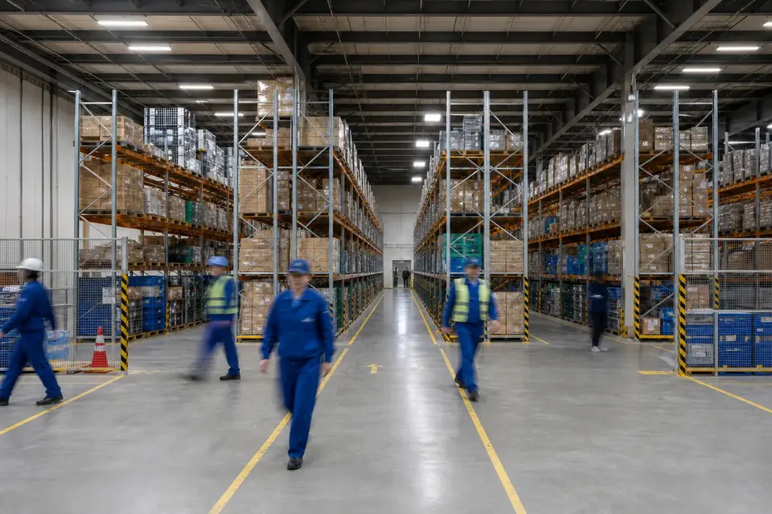

01Problem
物流の現場で、こんな課題はありませんか。
- 人手不足で、教育が追いつかない作業手順を標準化
- 判断がベテランの経験に頼っている判断の基準を言語化・仕組み化
- 紙やExcelの管理が限界業務に合うシステムを選定・導入
- システムを入れたが使われていない現場に合わせて定着まで伴走
- 何から手をつければいいか分からないまず業務の可視化から
- 改善の効果が数字で見えないKPIとダッシュボードを設計
まずは「何から手をつけるか」の整理からご相談ください。
03Reason
現場と仕組みの、両方がわかるチームです。
-

Reason 01
物流拠点の立ち上げと運営を経験。
代表はアマゾンジャパンで物流拠点の新規設立や生産管理に携わってきました。机上の改善案ではなく、現場で回るかどうかを基準に設計します。
- 拠点立ち上げ
- 生産管理
- 現場目線
-

Reason 02
要件定義だけで終わらせない。
既製品で足りなければ、自社で開発までお引き受けします。設計した人がそのまま実装に関わるので、意図が途中で抜け落ちません。
- 要件定義
- 受託開発
- 一気通貫
-

Reason 03
自社でも3PLを運営しています。
自ら倉庫運営を受託しているため、改善策の効果やコストの感覚を、運営する側の数字で検証してからご提案できます。
- 3PL運営
- 実地での検証
04Flow
ご相談から定着まで
- Step 01
無料相談
現状とお困りごとを伺います。課題が整理されていなくても構いません。
- Step 02
現場診断
現場を拝見し、業務フローとデータを確認して課題を整理します。
- Step 03
ご提案・お見積り
改善テーマの優先順位と進め方、体制と費用をご提示します。
- Step 04
実行・定着支援
導入や改善を進め、KPIで効果を確かめながら定着まで伴走します。
05FAQ
よくあるご質問
Qどのくらいの規模の会社から依頼できますか。
A
規模は問いません。拠点が1か所の会社や、物流部門を立ち上げたばかりの会社からもご相談いただいています。
Q費用はどのように決まりますか。
A
支援の範囲と期間をもとにお見積りします。現場診断のみ、要件定義のみといった部分的なご依頼も可能です。
Qすでに導入したシステムの立て直しも頼めますか。
A
対応します。使われていない理由を現場で確認し、運用の見直し、設定の変更、追加開発のどれが必要かを切り分けてご提案します。
Q現場に来てもらうことはできますか。
A
可能です。現場診断では実際の作業を拝見したうえで課題を整理します。遠方の場合はオンラインと組み合わせて進めます。
Contact
まずは、いまの現場の困りごとを
お聞かせください。
課題の整理からお手伝いします。ご相談は無料です。